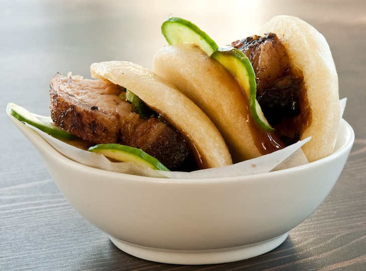
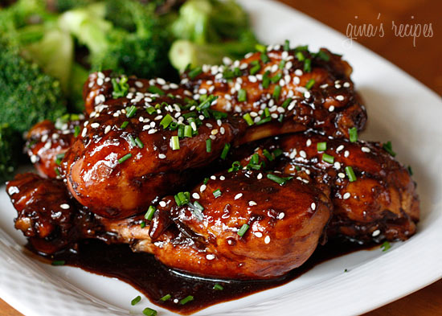
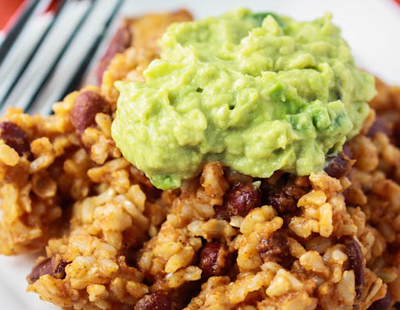
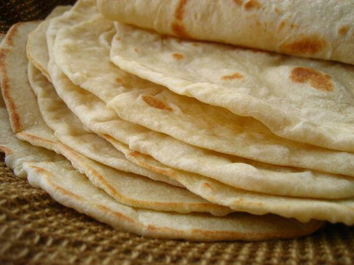

Ramen Noodle Salad

cabbage (red and green)
roasted nuts (pinenuts, slivered almonds, or similar)
carrots
1 pkg ramen
sugar
oil (olive or canola)
vinegar (apple cider, white wine, or similar)
break apart ramen while still in bag
add cabbage, carrots, nuts, and ramen together
mix dressing at a 2/2/1 sugar/oil/vinegar ratio
add ramen seasoning packet to dressing
dress salad
Bulgogi

bulgogi (super hmart)
Pork Buns

marinated pork belly (super hmart)
frozen steamed buns
kirby cucumber, thinly sliced
hoisin sauce
mix cucumber with 3:1 sugar:salt
steam buns (~10 minutes)
pan fry pork belly
add dab of hoisin
Asian Glazed Drumsticks

8 medium chicken drumsticks, skin removed
olive oil spray
1 cup water
1 tbsp Sriracha hot sauce (more or less to taste)
1/3 cup balsamic vinegar
1/3 cup low sodium soy sauce
1 tbsp honey (or sugar)
3 cloves garlic, crushed
1 tsp ginger, grated
2 tbsp chives or scallions, chopped
1 tsp sesame seeds
In a heavy large saucepan, brown chicken on high for 3-4 minutes with a little spray oil.
Add water, balsamic, soy sauce, honey, garlic, ginger, hot sauce and cook on high until liquid comes to a boil.
Reduce heat to low and simmer, covered for about 20 minutes.
Remove cover and bring heat to high, allowing sauce to reduce down, about 8-10 minutes, until it becomes thick, turning chicken occasionally.
(Keep an eye on glaze, you don't want it to burn when it start becoming thick)
Transfer chicken to a platter and pour sauce on top.
Top with chives and sesame seeds and serve.
source
Edamame

Waffles
.jpg)
3/4 cup all-purpose flour
1/4 cup cornstarch
1/2 teaspoon baking powder
1/4 teaspoon baking soda
1/2 teaspoon salt
1 1/2 teaspoons sugar
1 cup whole milk or buttermilk
1/3 cup vegetable oil
1 egg
3/4 teaspoon vanilla extract
combine dry ingredients and whisk together
combine wet ingredients and whisk together
add wet to dry
Pancakes

Lasagna

1 pound sweet Italian sausage, casings removed
12 ounces lean ground beef
1/2 cup minced white or yellow onion
2 cloves garlic, coarsely chopped or minced
28 ounces canned, no-salt-added crushed tomatoes and their juices
12 ounces canned, no-salt-added plain tomato paste
13 ounces canned, no-salt-added plain tomato sauce
1/2 cup water
2 tablespoons sugar
1 1/2 teaspoons ground dried basil
1/2 teaspoon fennel seed
1 teaspoon Italian seasoning blend
2 teaspoons kosher salt, plus more for the cooking water
1/4 teaspoon freshly ground black pepper
1/4 cup chopped fresh flat-leaf parsley, plus more for garnish
12 pieces dried lasagna pasta (each 2 1/2 to 3 inches wide and about 13 inches long)
1 pound part-skim ricotta cheese
1 large egg
12 ounces low-fat mozzarella cheese, sliced
3/4 cup freshly grated Parmigiano-Reggiano cheese, plus more for optional garnish
Heat the sausage in a large Dutch oven over medium-high heat. Cook for 4 to 6 minutes, using a spatula to break up any large clumps, until the meat is browned with no trace of pink. If desired, drain and discard the fat. Add the ground beef, onion and garlic, stirring to combine; cook until the beef is thoroughly browned and the onion has softened, breaking up any clumps as needed.
Stir in the crushed tomatoes and their juices, tomato paste, tomato sauce and water, then add the sugar, basil, fennel seed, Italian seasoning blend, 1 1/2 teaspoons of the salt, the pepper and half of the parsley, stirring to incorporate. Cover and cook for about 1 1/2 hours, stirring occasionally. The yield is about 6 1/2 cups.
Meanwhile, bring a large pot of water to a boil over high heat. Add a generous pinch of salt and then the lasagna. Cook not quite as long as the package directions indicate, so the noodles are al dente. Drain and rinse under cool water; separate them and lay them on a clean surface.
Combine the ricotta, egg, the remaining parsley and the remaining 1/2 teaspoon of salt in a mixing bowl until well incorporated.
Preheat the oven to 375 degrees. Have a 9-by-13-inch baking dish at hand.
Spread 1 1/2 cups of the sauce evenly over the bottom of the baking dish, then arrange half of the cooked lasagna noodles lengthwise so they completely cover the sauce, overlapping them a bit. Use an offset spatula to spread half of the ricotta mixture over the noodles, then use half of the mozzarella slices to completely cover the ricotta layer. Spread 1 1/2 cups of the sauce over the mozzarella, then scatter half of the Parmigiano-Reggiano evenly over the sauce.
Next, repeat the layers using the remaining lasagna noodles, the remaining ricotta mixture and the remaining mozzarella slices. Top with 1 1/2 cups of the sauce, spreading it to cover the mozzarella, then scatter the remaining Parmigiano-Reggiano cheese evenly over the sauce.
Use cooking oil spray to coat the underside of a piece of aluminum foil large enough to cover the lasagna; seal the foil tightly around the edges of the baking dish. Bake for 25 minutes, then remove the foil and bake for 25 minutes so the lasagna’s top layer of cheese is nicely browned on top.
Cool for 15 minutes before serving. If desired, garnish with parsley and Parmigiano-Reggiano cheese.
source
Fajitas

3 parts pineapple juice
2 parts soy sauce
1 part water
beef (flank or skirt steak) or chicken breasts
onion
bell pepper
mushrooms
Marinate beef at least overnight
Rice & Bean Casserole

1 cup brown rice, dry
3 cups vegetable or chicken broth
1 8-oz can tomato sauce
1 14.5 oz can beans {I used kidney beans — drained and rinsed}
1 4-oz can diced green chilies
1 1/2 tsp cumin
1 tsp chili powder
1 tsp salt
1/4 tsp garlic powder
2 avocados, very ripe
1 whole jalapeno, minced
pinch of cumin
big pinch of garlic salt
juice of 1-2 limes
Preheat oven to 350 degrees.
In a 9 x 13" pan, combine the rice, broth, beans, tomato sauce, green chilies, cumin, chili powder, salt and garlic powder. Stir well then cover TIGHTLY with tin foil. Place in oven and bake for 90 minutes {no peaking!}.
To make the guacamole topping, mash the avocados with the minced jalapenos, cumin, garlic salt and lime juice. Season with additional cumin and garlic salt to taste. When the rice and beans has finished cooking, serve on plates topped with a big scoop of guacamole!
source
Breakfast Tacos

eggs
bacon
tortillas
red potatoes
cheese
cut potatoes into small cubes and cook for 20-30 minutes in 350 degree oven
Breakfast Sandwich

english muffin
egg
bacon or sausage
cheese
Flour Tortillas

3 cups flour
1 teaspoon salt
1/3 cup fat/oil
1 cup warm water
pinch of baking powder
for the fat/oil, 1/3 cup lard is a little too pungent
try half lard and half olive oil